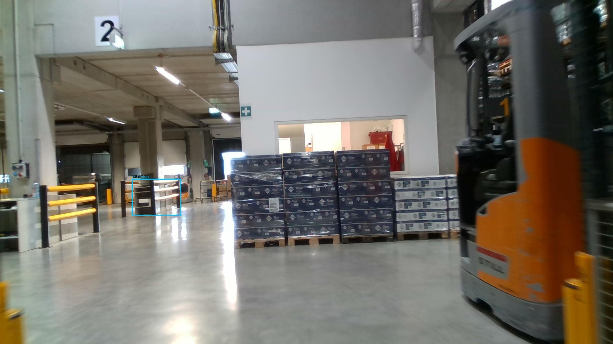

Prejšnji OD (shranjen)


Opis → phrase grounding (nov)

The image shows a large warehouse with a forklift parked on the right side. The forklift is orange and black in color and is moving towards the left side of the image. In the background, there are several pallets stacked on top of each other. The pallets are blue and appear to be filled with various items. The warehouse has a concrete floor and white walls, and there are pipes and ducts running along the ceiling. There is a number 2 on the wall, indicating that this is the number 2 of the warehouse.

Original · Caption raw · Grounding raw · Koordinate
Številke so lokalni ID regije. Dolge slikovne oznake so skrajšane; spodaj so celotne fraze. Napovedane regije se lahko prekrivajo ali opisujejo skupine.
| ID | Celotna fraza | bbox xyxy |
|---|---|---|
| 1 | The forklift | [1414.0799560546875, 4.860000133514404, 1913.2799072265625, 1072.9801025390625] |
| 2 | several pallets | [715.2000122070312, 462.780029296875, 1440.9599609375, 779.2200317382812] |
| 3 | The pallets | [713.2799682617188, 461.70001220703125, 1440.9599609375, 780.300048828125] |
| 4 | The warehouse | [6.71999979019165, 610.7400512695312, 1663.679931640625, 1074.06005859375] |
| 5 | walls | [736.3200073242188, 112.8600082397461, 1377.5999755859375, 552.4200439453125] |
| 6 | a number 2 | [290.8800048828125, 43.7400016784668, 398.3999938964844, 163.62001037597656] |
| 7 | the number | [290.8800048828125, 43.7400016784668, 400.3199768066406, 164.70001220703125] |